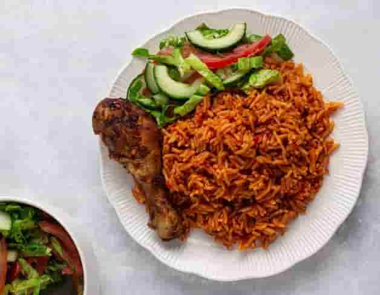
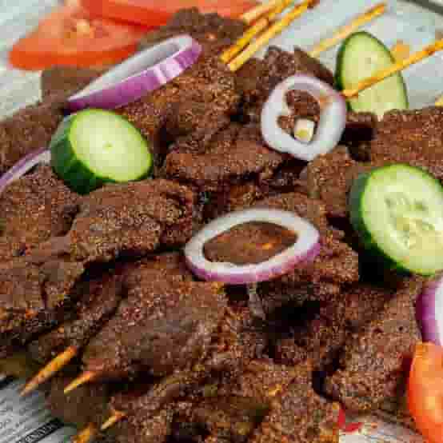
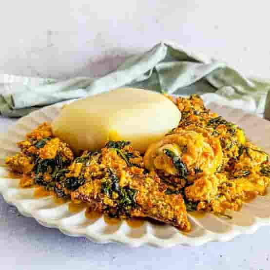

Music & Dance
Music and dance are important parts of celebrations, ceremonies, entertainment, and everyday life.
Culture
Nigerian culture is expressed through music, clothing, celebrations, food, and community.
Music and dance are important parts of celebrations, ceremonies, entertainment, and everyday life.
Colorful fabrics and traditional clothing reflect identity and are commonly worn during special occasions.
Festivals bring communities together through food, performances, art, history, and traditions.
Warm hospitality and sharing food with guests are important parts of Nigerian social life.
Taste Nigeria
Food connects families, communities, and generations.

A beloved rice dish prepared with tomatoes, peppers, onions, spices, and other ingredients.

Spiced grilled meat that is popular as a street food throughout many parts of Nigeria.

A rich soup made with ground melon seeds and commonly enjoyed with Nigerian swallows.
“